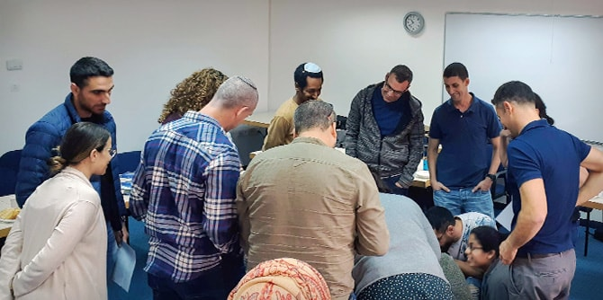

באירוע השתתפו גם ראש מחלקת החינוך בחיל החינוך והנוער, אלוף-משנה לורה בן חמו, קצינים בכירים בחיל החינוך והנוער, סגל התוכנית ועמיתי מחזור י"ג – קצינים ונגדים, מנהיגים חינוכיים ביחידותיהם שנבחרו להשתתף בתוכנית.
בדברי הברכה שלו עמד
תת-אלוף פייראיזן על החשיבות הרבה של העשייה החינוכית בצה"ל ועל האחריות הרבה המוטלת על כתפי מפקדי צה"ל – כמפקדים בצבא עם ממלכתי – בבואם לעסוק בחינוך. תת-אלוף פייראיזן איחל למשתתפי התוכנית למידה מעשירה ופורייה, הודה לסגל התוכנית על שיתוף הפעולה הפורה בין קרן מנדל-ישראל לחיל החינוך והנוער וצה"ל לאורך השנים, והעלה על נס את תרומתו ומחויבותו האישית של מר מורטון מנדל לצה"ל, לחברה הישראלית ולמדינת ישראל.
 תרגיל גיבוש ראשון: הרכבת משפט המשלב את ציפיותיהם של כל העמיתים מהתוכנית.
תוכנית מנדל למנהיגות חינוכית בצה"ל נוסדה בשיתוף עם חיל החינוך והנוער בשנת תשס״ו (2005). מטרתה לסייע לקציני צה״ל לפתח את זהותם כאנשי חינוך לובשי מדים ולהרחיב את הידע, התפיסות והפרקטיקות שלהם בתחומי חינוך. משתתפים בה קצינים ממגוון החילות והתפקידים: קציני חינוך, קציני משאבי אנוש ומפקדים מחילות השדה, האוויר, הים, התקשוב והמודיעין. מנהל התוכנית הוא
ליאור פרי, והתוכנית כפופה ישירות למנכ"ל קרן מנדל-ישראל.
{kind=link}